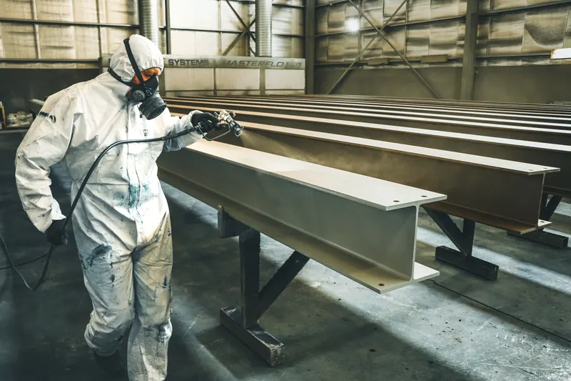

Quick Answers
How thick should the foam be on a steel building?
Plan on 1.5 to 2 inches of closed cell, which is common installer practice rather than code. A pole building supplier cites one manufacturer's 1.5 inch minimum for an air and vapor barrier and recommends 2 inches under roof steel. At R-6 to R-7.4 per inch, 2 inches adds roughly R-12 to R-15.
Why not use open cell foam on metal?
Open cell is the wrong foam against steel. It lets water vapor through to the cold panel and holds water once wet, while the DOE spray foam guide describes closed cell as hydrophobic. A metal construction trade magazine also warns that open cell can shift framing and panels.
Does the foam need a covering in an occupied shop?
In most cases, yes. One closed cell data sheet says foam in a metal building still needs a thermal barrier or approved coating unless the space qualifies for the attic or crawl space exception. Half inch drywall is the standard thermal barrier, and some foams are tested with specific intumescent coatings instead.
When Metal Building Foam Makes Sense
Foam is worth pricing when you see any of these:
- The roof drips on cool mornings after a warm, damp day, even though it does not leak.
- Rust is spotting the underside of the panels, the purlins, or tools stored below.
- Faced fiberglass blanket sags, tears or stains between the purlins.
- You want to heat or cool the building and the heater cannot keep up.
- A barndominium shell needs its outer insulation layer before interior framing starts.
- A shipping container or steel shed is becoming a workshop or dry storage.
How It Works: Why Steel Sweats and How Foam Stops It
Chill air to its dew point and the extra vapor turns to liquid on whatever surface did the chilling. Steel conducts heat so well that a bare panel sits near the outdoor temperature, and air leaking in through laps, eaves and door gaps carries far more moisture to it than vapor diffusing through materials.

Night is the worst time. Roof steel radiates heat to the sky and falls several degrees below the air around it, while the afternoon's warm, damp air is still gathered under the roof. That air touches the cold panel, beads up and drips.
Closed cell foam answers both halves. Its inner face stays warm, away from the dew point, and because it is bonded to the metal there is no gap behind it for damp air to reach. On one manufacturer's data sheet, a single inch measures 0.91 perm, which counts as a Class II vapor retarder, and it already stops air.
Prep the building
Equipment and fixtures get covered, old blanket insulation comes down, and oily panels get cleaned. One closed cell data sheet requires the surface to sit at least 5 degrees F above the dew point, so we check panel temperature and humidity first.
Spray in passes
Roof first, then walls. The same sheet caps a pass at 2 inches and wants the foam cooled below 100 F before the next, so heat does not build up inside it.
Cover where required
Space people work in gets a thermal barrier or listed coating. Nobody goes back in until the product's re-entry time has passed.
Metal Building Insulation Cost in Knoxville
Price follows square footage of steel, foam thickness, roof height, masking, and whether old fiberglass comes down. National cost guides supplied these figures in October 2026; treat them as budget ranges, not our prices.
| Metal building item | National range | Guide |
|---|---|---|
| Closed cell foam, general range | $3.00 to $5.00 per sq ft | HomeGuide, 2026 |
| Closed cell, 1 inch thick | $1.25 to $2.90 per sq ft | This Old House, April 2026 |
| Shipping container | $1,800 to $2,500 | Fixr, January 2025 |
| Pulling down old blanket insulation (machine) | $1.50 to $3 per sq ft | HomeAdvisor, June 2024 |
Worked example: a 30 by 40 foot shop with 10 foot walls has about 1,400 square feet of wall steel and a little over 1,200 of roof, call it 2,600 square feet. At $3.00 to $5.00 per square foot, that is roughly $7,800 to $13,000.
See the Knoxville spray foam cost guide or the spray foam cost calculator for other jobs. For a written number on your building, call (865) 564-7823 and ask for a free estimate.
Why Steel Buildings Drip So Much Around Knoxville
Knoxville air is damp most of the year. Average relative humidity is about 71.5 percent, climbing near 76 percent in August and September, and the normal July low is 68.7 F, so summer nights stay muggy while roof steel cools off.
Fog is the tell. WATE counts more than 40 fog days a year in the Knoxville to Tri-Cities corridor, and fog only forms when air reaches its dew point, the same mornings a bare roof is wettest underneath.
Winter flips it: on a normal January low of 30.0 F, a heated shop pushes warm indoor air against panels the night has chilled.
Code depends on use. DOE lists Tennessee's commercial energy code as the 2021 IECC and ASHRAE 90.1-2019 with amendments, effective April 17, 2025. Barndominium living space follows the residential code, covered on our pole barn and barndominium page.
What the Free Estimate Includes
We walk the building inside and out, measure the steel, and look for rust, loose fasteners, roof leaks and old insulation. Then we ask how you use the space, since cold storage, a heated shop and a future living area each call for a different thickness and covering.
You get a written price listing the foam type, target thickness, areas covered, and any removal or coating. If a panel or a leak should be fixed first, we say so before any foam goes on.
Metal Building Spray Foam FAQ
Related Services
- Pole barn and barndominium insulation: post-frame roofs, walls and finished living areas.
- Closed cell spray foam: the product itself, its R-value and vapor control.
- Commercial spray foam: warehouses and larger steel buildings under the commercial code.
Where We Do This Most
- Alcoa: a company town built around the aluminum plant, with industry and the airport still there.
- Maryville: the seat of Blount County, which counts more than 100 manufacturing plants.
- Morristown: more than 100 manufacturers, plus lake country around Cherokee Lake.
- Lenoir City: a river town named in a 2025 dense fog advisory, the kind of night that soaks a steel roof.
- Oak Ridge: about 59.7 inches of precipitation a year, well above Knoxville's roughly 52.
Tell us the building size, how you use it and where it drips. Call (865) 564-7823 or send the form for a free estimate and a written price.